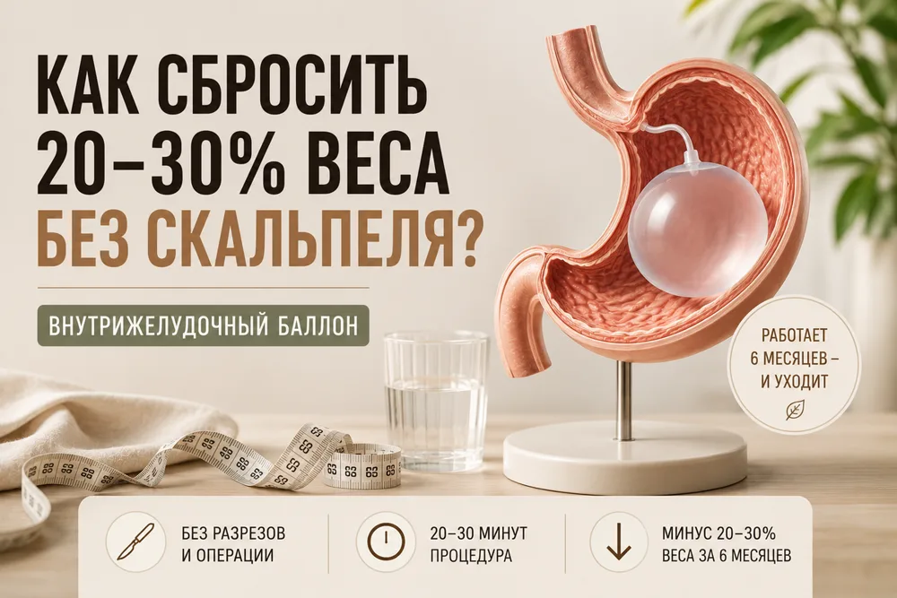

Как сбросить 20–30% веса за 6 месяцев без скальпеля?



95% диет заканчиваются возвратом веса — и вы в этом не виноваты. Организм просто умнее и хитрее. Но выход есть: внутрижелудочный баллон.
Это не голодовка и не операция. Метод работает там, где запреты и сила воли пасуют.
Что это и как проходит
Баллон — небольшой силиконовый шар. Его вводят через рот с помощью тонкого зонда, как при гастроскопии, под медикаментозным сном. Процедура занимает 30–40 минут, в тот же день можно идти домой.
Баллон заполняют физиологическим раствором и оставляют на 6 месяцев. Он занимает часть объёма желудка, помогает быстрее почувствовать сытость и спокойно перейти на меньшие порции. Через полгода его удаляют через рот за 10–15 минут.
За 6 месяцев пациенты теряют от 16 до 30% избыточного веса. Это не волшебство: баллон — «костыль», который помогает ходить прямо, а навык есть меньше остаётся с вами.
Кому подходит
- Предожирение — помогает преодолеть психологический барьер.
- Ожирение 2 степени — не допустить дальнейшего набора веса.
- Диеты и препараты не дали результата или вес вернулся.
- Есть связанные с весом болезни: гипертония, диабет 2 типа, апноэ сна, жировой гепатоз.
- Вы не хотите операцию и скальпель.
Баллон не ставят при беременности, воспалительных заболеваниях ЖКТ, грыже диафрагмы, алкоголизме и тяжёлых психических расстройствах: метод требует режима и наблюдения.
Риски
В первые дни возможны тошнота, дискомфорт, иногда рвота. Обычно это проходит за 3–5 дней, врач назначает препараты. Тяжёлые осложнения встречаются реже чем в 1–2% случаев — при опытном эндоскописте и правильном отборе пациентов.
Баллон — для людей с ИМТ от 27–30 и выше, кто уже пробовал диеты и готов признать: одной силы воли недостаточно.
Ваш врач Гондусов Д.В. 

Статья носит информационный характер и не заменяет консультацию врача. Не занимайтесь самодиагностикой.